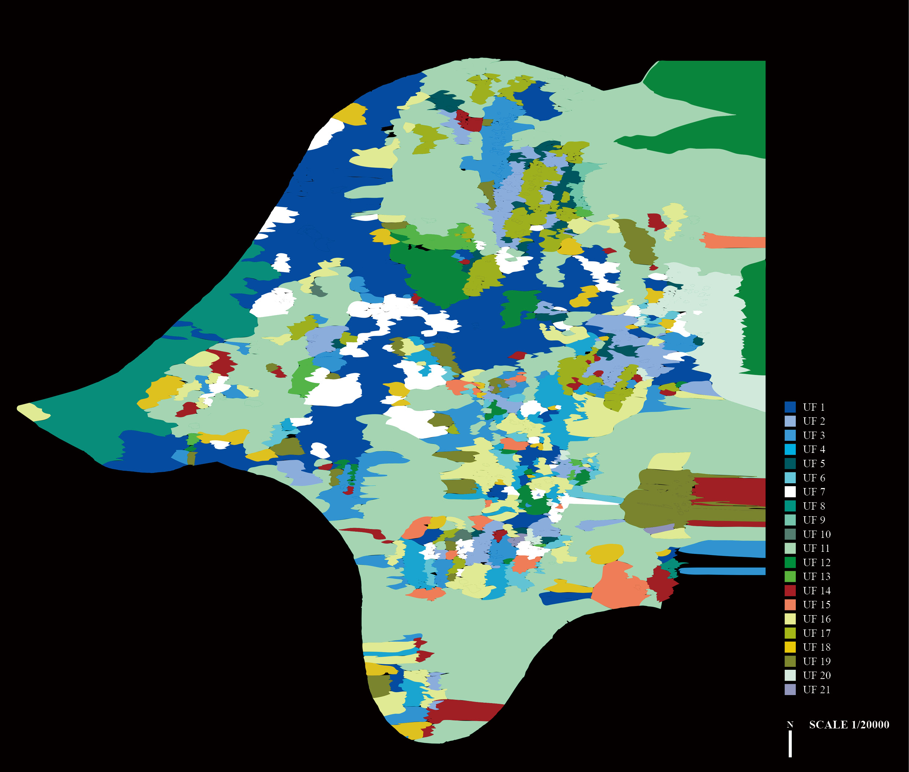

This paper reports on the analytical potential of machine learning methods for urban analysis. It documents a new method for data-driven urban analysis based on diagrammatic images describing each building in a city in relation to its immediate urban context. By statistically analyzing architectural and contextual features in this new dataset, the method can identify clusters of similar urban conditions and produce a detailed picture of a city’s morphological structure. Remapping the clusters from data to 2D space, our method enables a new kind of urban plan that displays gradients of urban similarity. Taking Pittsburgh as a case study we demonstrate this method, and propose “morphological types” as a new category of urban analysis describing a given city’s specific set of distinct morphological conditions. The paper concludes with a discussion of the implications of this method and its limitations, as well as its potentials for architecture, urban studies, and computation.

Clustering Based on Contextual Similarity
In statistics, machine learning, and information theory, dimensionality or dimension reduction is the process of reducing the number of random variables under consideration by obtaining a set of principal variables (Roweis and Saul 2000). This section shows how these statistical methods can detect similarity of architectural context conditions of a building in a diagrammatic image through their visual information. Dimensionality reduction is employed to extract the main features of the architectural context conditions in an image.
We used the t-SNE (t-distributed Stochastic Neighbor Embedding) algorithm to reduce dimensionality and keep principal variables of DID-PGH. t-SNE is a tool to visualize high-dimensional data. It converts similarities between data points to joint probabilities and tries to minimize the Kullback-Leibler divergence (Kullback and Leibler 1951) between the joint probabilities of the low-dimensional embedding and the high-dimensional data (Sci-kit Learn). In these experiments, the t-SNE algorithm is established and visualized in Tensorboard® by using an embedding projector. The hyperparameter settings are as follows: perplexity 35, learning rate 100, iterations 1500. A data point in the reduced dimension space means the building, the location of the point means its characteristics of the building footprint and architectural context conditions, and the distance among the points means the degree of the similarity. The shorter the distance, the more similar the context conditions. The left image in Fig. 8 shows the results of visualization of DID-PGH through t-SNE based on the similarity of architectural context conditions by neighborhoods.
Density-Based Spatial Clustering of Applications with Noise (DBSCAN) algorithm is used to find core samples of high density from the distributed points (Sci-kit Learn). After applying DBSCAN to the results of the t-SNE visualization, the data points distribution model illustrates similarity of the contexts by the distance between data points. The hyperparameter settings of DBSCAN are as follows: Epsilon 1000 (10 × 100), the minimum number of samples 15, leaf size 30. The data on the normalized data space from 0 to 1 is imported to Rhinoceros® using Grasshopper. The data space is scaled by a factor of 100 for improved visualization. The Scikit-learn’s DBSCAN was invoked within Grasshopper. The value of epsilon was scaled accordingly. According to the results of the DBSCAN, in data space, Pittsburgh has 21 different distinct clusters that share morphologically similar architectural contexts.

Morphological Analysis by Clusters
With DMT, typical context conditions of new urban fabrics are sampled to examine the properties of urban clusters composed of 21 clusters. 3D models of typical context conditions of 21 different morphological types show their spatial features and information. We sample the center of the largest type boundaries for selecting the sites of 3D models. In order to investigate the distinctive features of each morphological type, we used spatial quality descriptors and several statistical values: occupancy rate (%), occupancy rank, average height (m), average area (m2), average density, average building occupancy, and average stories.
‘Occupancy Rate’ is a relative measurement of how much a cluster covers the city area. ‘Occupancy Rank’ is the rank of the occupancy rate. ‘Average Height’ is the mean of the building heights in a cluster. ‘Average Area’ is the mean of the building areas in a cluster. ‘Average Density’ is the mean of the building densities in a cluster. Density is the floor area of the building multiplied by the total height divided by the floor height (3m). ‘Average Building Occupancy’ is the average of the building occupancy which is the ratio between the building floor and parcel area, ‘Average Stories’ is the average height divided by the floor height (3m).
In the sequel we refer to specific areas (or locales) in Pittsburgh by their names in describing the distribution of urban types. The most popular urban type is ‘Urban Type 14’, which presents places where a certain number of empty parcels exists in the neighborhood and has no distinctive shape of blocks. The next popular type is ‘Urban Type 1’, which is street-centered and has orthogonal intersecting spaces with different sized urban blocks. This is mainly distributed in Lawrenceville, Bloomfield, Shadyside, and Oakland. The vertically distinct urban type is ‘Urban Type 8’, which consists of typical blocks with grid systems. This is mainly distributed in Downtown and the Strip District. Urban types with a relatively large building area are ‘Urban Type 13’ and ‘Urban Type 15’. These are mainly distributed in Garfield, North Squirrel Hill, Green Field, and Swisshelm Park. Urban Type 6 has the highest level of land occupation. It can be interpreted that this fabric has the least outside space. When ‘Average Area’, ‘Average Density’, and ‘Average Building Occupancy’ are interpreted together, it can be seen that ‘Urban Type 13’ and ‘Urban Type 21’ have the highest density of buildings with the high level of FAR (Floor-Area Ratio).